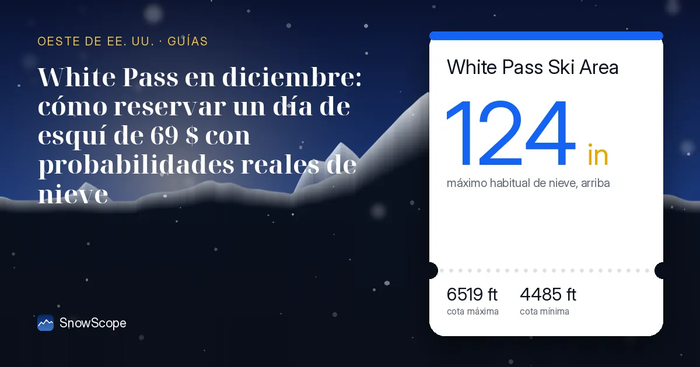

White Pass en diciembre: cómo reservar un día de esquí de 69 $ con probabilidades reales de nieve
White Pass premia a quienes planifican. Sus forfaits de adulto más baratos se venden online, con antelación, desde 69 $ en días de valle, y nuestro historial de nieve dice que la segunda mitad de diciembre es cuando la apuesta se vuelve segura.
Consulta la previsión de nieve en tiempo real de White Pass Ski Area en la app SnowScopeEspesor de nieve, alertas de nieve polvo y mapa 3D, gratis.
Un puerto tranquilo bajo el Mount Rainier
White Pass está en la US-12, al este de Packwood, a la sombra del Mount Rainier. Según nuestra cartografía tiene 8 remontes y unos 22 mi (36 km) de pistas, entre aproximadamente 4480 ft (1367 m) y 6520 ft (1987 m). No hay un pueblo que pagar, lo que explica en parte por qué un día aquí cuesta menos que en los grandes nombres.
El invierno suele asentarse pronto: en la mediana de nuestros 46 inviernos, la nieve duradera llega a media montaña a finales de octubre.

El juego de la reserva
White Pass usa precios online dinámicos para la temporada 2026/27. Los forfaits de adulto empiezan desde solo 69 $ en días de valle, de lunes a jueves fuera de festivos, y 89 $ en días punta, de viernes a domingo y festivos. A medida que una fecha se agota, el precio sube por tramos, hasta 99 $ en valle y 119 $ en un día punta.
En la práctica, el precio mínimo es para quienes eligen un día entre semana y reservan pronto. Si esperas al parte de nieve y luego reservas un sábado de diciembre, espera pagar más cerca del extremo alto del rango.

Qué semana de diciembre reservar
Nuestro historial ofrece una escala clara. El porcentaje de inviernos con buena nieve a media montaña (una media semanal de 20 in, 50 cm, o más) es del 74 % en la semana del 30 de noviembre al 6 de diciembre, 85 % del 7 al 13 de diciembre, 91 % del 14 al 20 de diciembre y 96 % del 21 al 27 de diciembre.
En un 15 de diciembre típico, media montaña, a unos 5500 ft (1677 m), tiene 40 in (102 cm) y la cima 42 in (107 cm). Para el 31 de diciembre, media montaña está en 59 in (151 cm). Un diciembre flojo (un invierno de cada diez) aun así tenía 17 in (42 cm) a media montaña el día 15, suficiente para pistas preparadas, no para explorar.
¿White Pass, Mt. Baker o Timberline?
Mt. Baker recibe más nieve según nuestros datos, 46 in (116 cm) a media montaña en un 15 de diciembre típico, pero solo vende el mismo día: 98,80 $ en valle y 115,42 $ en punta. El forfait de día completo de Timberline es de 129 $ en valle y 161 $ en punta.
Así que White Pass es el más barato de los tres si reservas pronto un día de valle, y Mt. Baker es la apuesta de nieve más segura. Ambos ganan en precio a un día punta en Mt. Hood.
Otra puerta de entrada: el Indy Pass
White Pass está en la lista del Indy Pass para 2026-27. El Indy Base Pass cuesta 419 $ para adultos y da dos días en cada una de más de 300 estaciones asociadas, con fechas de bloqueo; el Indy+ Pass, a 469 $, elimina esos bloqueos. Si planeas varias escapadas a estaciones pequeñas este invierno, vale la pena compararlo con unos cuantos forfaits de día online.
Consejos para esquiadores
- Elige tu fecha de diciembre pronto, y un día entre semana, para conseguir el precio mínimo de 69 $.
- Si puedes esperar, reserva la semana del 14 al 20 de diciembre o más tarde: los inviernos pasados fueron mucho más fiables a partir de entonces.
- La US-12 en el puerto puede cerrarse o exigir cadenas en tormentas: consulta el parte del puerto antes de conducir.
- El invierno pasado fue muy flojo aquí, así que no juzgues esta temporada por eso: mira el mapa de nieve la semana anterior.
Referencias y créditos
- White Pass, online day tickets 2026/27 (official) skiwhitepass.com/online-day-ticket-sales
- Indy Pass, shop 2026-27 (official) www.indyskipass.com/shop
- Mt. Baker Ski Area, daily lift tickets (official) www.mtbaker.us/tickets-and-passes/daily-lift-tickets/
- Timberline Lodge, winter lift tickets 2026/2027 (official) www.timberlinelodge.com/activities/winter/lift-tickets/
- OpenSkiMap (mapped lifts and runs) openskimap.org/
- avalanche.org, US avalanche centers and forecasts avalanche.org/
Sobre estas cifras
Cifras de nieve: histórico de nieve de SnowScope, 46 inviernos pasados (1980-81 a 2025-26) en las alturas indicadas (base, media, cima), una reconstrucción de la nieve pasada para una zona corregida por altitud (basada en ERA5-Land; Snow_Hydro 1 km para Marruecos), no los partes de la estación. Nieve actual: el mapa de SnowScope. Remontes, pistas y alturas: cartografía OpenSkiMap. Precios: las páginas oficiales listadas abajo, consultadas el 13 de noviembre de 2026; los precios dinámicos cambian con la fecha y la demanda.
Boletines oficiales de aludes: avalanche.org (US national portal)
Citar este informe
Para investigación, docencia o prensa: cifras y gráficos reutilizables libremente bajo CC BY 4.0 con esta cita.
SnowScope (2026), White Pass en diciembre: cómo reservar un día de esquí de 69 $ con probabilidades reales de nieve, https://snowscope.app/blog/es/2026/11/white-pass-december-skiing-budget-2026.html, consultado el 2026-11-14
SnowScope (Atlas Labs). (2026, November 14). White Pass en diciembre: cómo reservar un día de esquí de 69 $ con probabilidades reales de nieve. SnowScope snow reports. https://snowscope.app/blog/es/2026/11/white-pass-december-skiing-budget-2026.html
BibTeX
@misc{snowscope2026whitepassdecemberskiingb,
author = {{SnowScope (Atlas Labs)}},
title = {White Pass en diciembre: cómo reservar un día de esquí de 69 $ con probabilidades reales de nieve},
year = {2026},
month = nov,
howpublished = {\url{https://snowscope.app/blog/es/2026/11/white-pass-december-skiing-budget-2026.html}},
note = {Published 2026-11-14 17:07 UTC; accessed 2026-11-14}
}· CC BY 4.0 · Métodos, datos y herramientas →
Sigue White Pass Ski Area
Gratis: un aviso cuando llega la nieve y la previsión cada mañana.